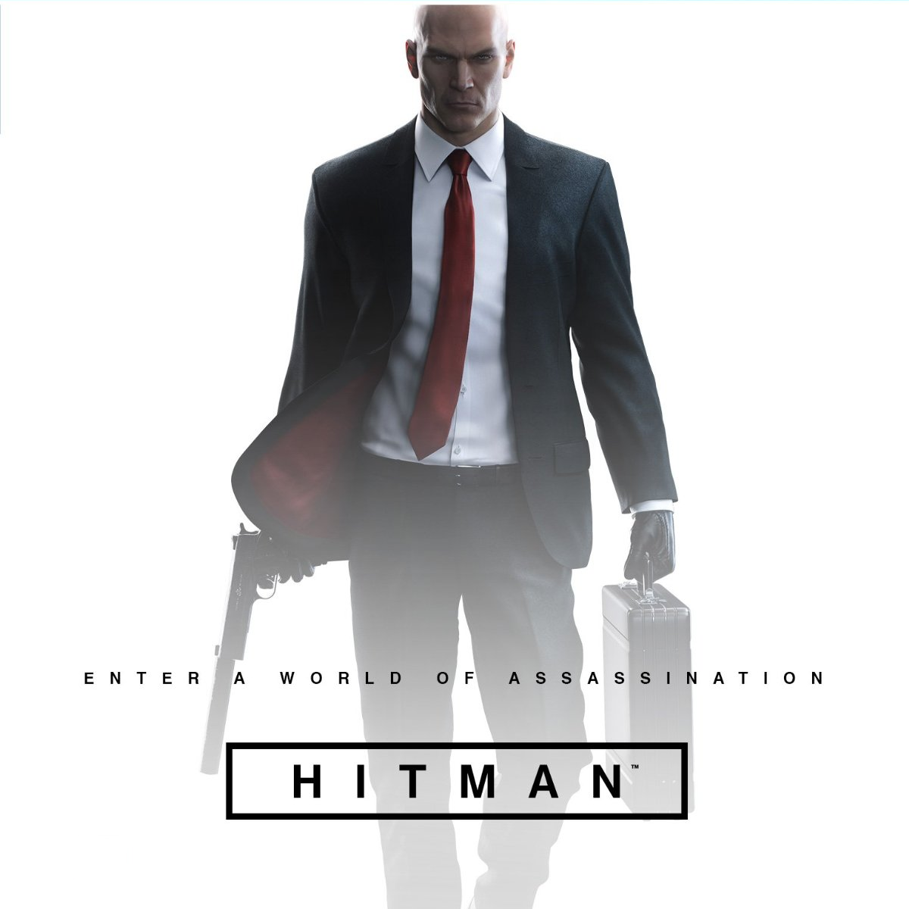

Hitman Episode 6: Hokkaido Review
Luke Reilly
1 November 2016 6:00 pm
Io Interactive’s episodic Hitman experiment is over – or at least, the first season is anyhow. The end result has been slightly uneven (the season began with a strong pair of missions but subsequent episodes were never quite able to match them) but Io has managed to wrap up proceedings on a very positive note. Hitman Episode 6: Hokkaido has 47 flexing every one of his murderous muscles, and it’s easily the best ep since April’s terrific Sapienza mission.
Hokkaido’s remote mountaintop private hospital is a labyrinth of luxurious patient quarters, service areas, and high-tech medical facilities, and it feels a lot bigger on the inside than it looks from the outside. It’s an interesting, atmospheric, and layered map, and a huge step up from last month’s one-note Colorado militia compound.
Outside, where the building itself clings to the mountain, there’s heavy snow, rocky perches, and a grand view. Fireworks pop and paper lanterns drift over the distant town in the valley below, which the hospital’s cable car stretches over. Inside, the place is a fusion of a distinctly Japanese luxury hotel and ice-white operating theatres and observation rooms. Different zones are divided by security doors linked to ID tags embedded in clothing, and this places a big focus on finding the right disguises to suit your planned approach.
In an added twist 47 can’t take anything with him into this mission, so any weapons or equipment you want to use will have to be procured on-site. This made total sense to me initially, as 47’s default way into the hospital is under an assumed identity as a new patient, but became a bit of an arbitrary and pointless hurdle later on, once I’d unlocked other mission starting positions. If I’m planning to sneak 47 into the building from the hiking trail, dressed as a ninja, I don’t know why he can’t carry a few coins or a lockpick.
There are two targets in Hokkaido: ICA turncoat Eric Soders and a Japanese lawyer set to make public a list of current ICA operatives around the world. The lawyer is much like any number of targets over the past six months and can be liquidated in a variety of familiar ways, but 47’s final victim of 2016 presents a fresh and welcome challenge. The mission begins with Soders undergoing a heart transplant and thus he never leaves the operating table.
It creates a new and interesting predicament. The target is very much a sitting duck – he can’t run and he can’t hide – but he’s not especially easy to access. There are, of course, ways of ensuring he doesn’t leave the operating theatre alive without ever actually going near him. (One of them is especially… heartless.)
A warning, though: stow any expectations that the final episode of this season will offer much in the way of closure for Hitman’s story to date as it does little more than set up seasons to come. It really is quite tough to get truly invested in the intrigue Io has been trying to establish here; it’s just too fractured.
The Verdict
Hitman Episode 6: Hokkaido is one of the best levels this season and a great mission to end the year on. The map itself is very good, the atmosphere is excellent, and the hits are challenging. Tricky and more than a little James Bond-esque (the snowed-in private clinic has a real SPECTRE / On Her Majesty’s Secret Service vibe to it), Hokkaido is vintage Hitman at its most creative.